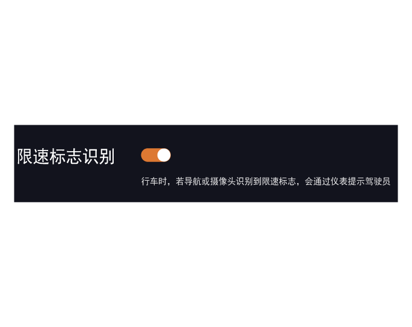

限速标志识别简称TSR。TSR通过安装在前风窗玻璃上的智能前向摄像头探测前方道路上的限速牌，同时融合音响系统导航透出的数据，为驾驶员提供限速信息，在超过限速值时提醒驾驶员已超速。

开启和关闭
通过音响系统“设置→ADiGO智能驾驶→ADiGO主动安全辅助”界面，点击“限速标志识别”右侧 软按键设置开启或关闭。
软按键设置开启或关闭。
此功能开启后，若导航或智能前向摄像头识别到前方道路限速标志，会在组合仪表上显示限速标志值；若当前仪表车速超过限速值一定阈值，组合仪表上限速标志图标会持续闪烁。
详细内容请查看用户手册